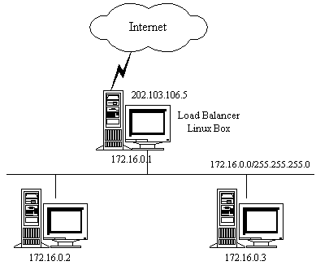
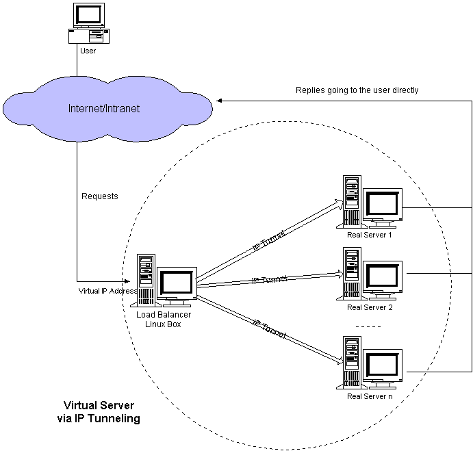
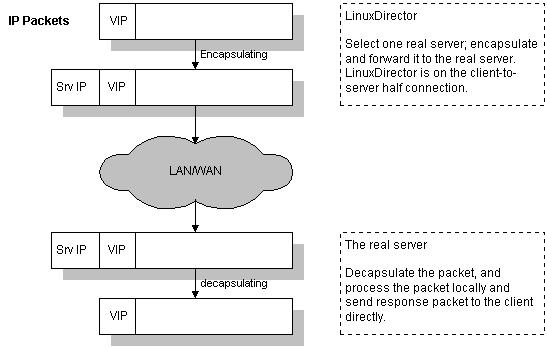
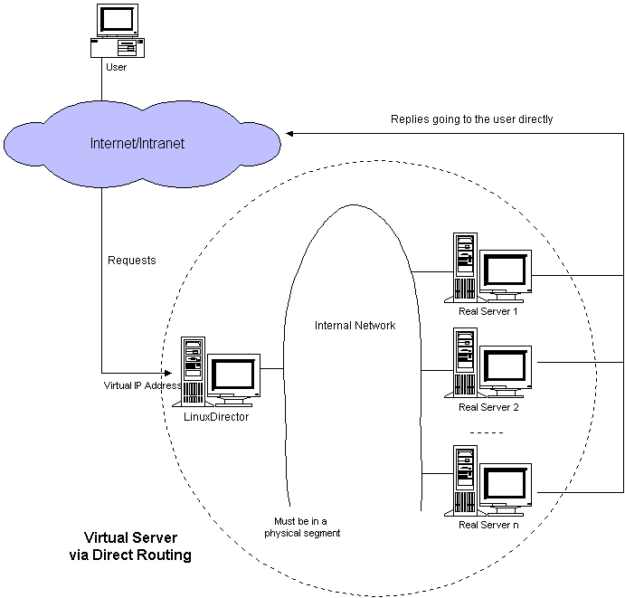
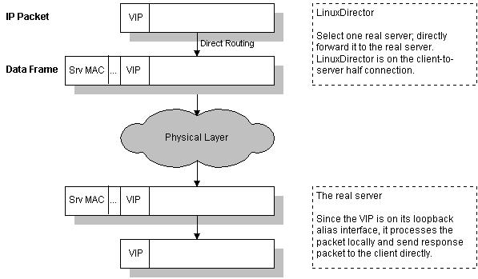
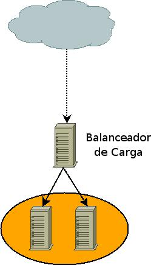
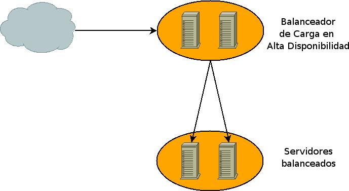

3.4. Linux Virtual Server - LVS
Linux Virtual Server es una solución para poder implementar un servidor virtual altamente escalable y en alta disponibilidad.
Esta solución consiste en un balanceador de carga, también conocido como director, que será la máquina que será accesible directamente para los clientes y luego tendremos los servidores que serán aquellos que recibiran las peticiones de los clientes, vía el balanceador de carga, y responderán a las peticiones.
 | Los servidores podrán estar o bien en la misma red física o en redes diferentes lo que permitirá el tener servidores en granjas distribuidas geográficamente. Esta solución nos permitirá tener el servicio funcionando casi continuamente ya que no se verá afectado por posibles caídas de las máquinas debido a fallos en el suministro eléctrico o bien cortes en el ISP de una determinada granja. Cualquiera de estos fallos, u otros que pudieran ocurrir, afectarán a una o varias granjas, pero nunca a todas con lo cual el servicio seguiráa funcionando aunque los clientes podráan experimentar cierta demora en el servicio. |
Para los clientes existirá un único servidor (el balanceador) que se encargará de distribuir la carga entre los servidores reales.
La escalabilidad en el servicio la conseguiremos añadiendo nodos, mientras que la disponibilidad se logrará identificando el nodo o el balanceador que no funciona y reconfigurando el sistema de tal forma que el servicio no se vea interrumpido. Es decir no enviando peticiones a un nodo que no pudiera dar servicio en ese momento.
El balanceo lo podemos hacer de tres formas:
Mediante NAT
IP Tunneling
Direct Routing
3.4.1. Virtual Server mediante NAT
NAT (Network Address Translation) es una técnica utilizada para que una máquina reciba información dirigida a otra y esta pueda reenviarla a quien la solicitó inicialmente.
Para ello la máquina que recibe la información, en forma de paquetes, deberá reescribir los paquetes sustituyendo su propia dirección con la de la máquina que realizó la petición (nos referimos a direcciones tanto físicas, MAC, como lógicas, IP) una vez reescrito el paquete de la forma correcta el balanceador se encargará de enviar los paquetes por la interface adecuada para que le lleguen al destino verdadero del paquete.
Cuando el balanceador reciba peticiones este sobreescribirá el paquete y pondrá la dirección de un servidor real, gracias a esto los servidores reales podrán estar ejecutando cualquier sistema operativo que sea accesible vía TCP/IP.
Cuando el servidor responda lo hará al balanceador y este reescribirá el paquete, otra vez, poniendo en los paquetes la dirección del cliente que solicitó la información.

LVS - NAT.
El balanceador guardará los datos de todas las conexiones que balancee para luego devolver la respuesta al cliente adecuado.
Pero no todo son ventajas, esta sobreescritura de los paquetes trae consigo una carga de CPU que puede llegar a ser un cuello de botella. Además tendremos que tener en cuenta cual es el ancho real de nuestra interface de red y tener presente que por el balanceador van a pasar tanto las peticiones hacia los servidores, como las respuestas de los servidores hacia los clientes.
Todos estos paquetes tendrán que ser reescritos por el balanceador y aunque aumentemos la memoria o las capacidades de procesamiento del balanceador todavía estaremos limitados por el ancho real de la interface ya que las respuestas de los servidores ocuparán mas ancho de banda que las peticiones.
 | El problema del ancho de banda se podrá paliar utilizando las capacidades de Bonding del núcleo de Linux. |
No suele ser muy recomendable esta opción ya que los costes necesarios para desplegar la infraestructura suelen ser mayores que los de implementar LVS con IP Tunneling o Direct Routing.
El balanceador deberá tener dos IP una de cara a los posibles clientes (DIP) y otra en la red de los servidores (VIP), es decir que el balanceador deberá hacer funciones de enrutado con lo cual el núcleo deberá estar configurado para ello y tendremos que tener el enrutado habilitado y el núcleo tendrá que estar compilado para poder sobreescribir paquetes.
| Para tener habilitado el enrutado es necesario que el núcleo esté configurado para ello y necesitaremos que el fichero /proc/sys/net/ipv4/ip_forward si utilizamos ipv4 o /proc/sys/net/ipv6/conf/all/forwarding estén a 1. |
| Los servidores en este caso estarán en la misma red de VIP y tendrán como gateway al balanceador de carga. |
3.4.2. Virtual Server mediante IP Tunneling
Utilizando NAT teníamos un cuello de botella en el balanceador ya que tiene que reescribir y distribuir los paquetes del cliente al servidor y viceversa.
Utilizando IP Tunneling el balanceador únicamente tendrá que hacerse cargo de las peticiones de los clientes y enviarlas a los servidores, siendo estos mismos los que responderán a los clientes. De esta forma el balanceador de carga puede manejar mas nodos, es decir el servicio es mas escalable.

LVS - IP Tunneling.
Una vez el balanceador de carga tiene el paquete determina si pertenece a uno de los servicios que tiene balanceados. De ser así encapsula el paquete en otro paquete y se lo envía al servidor de destino. Es este el que se encarga de responder al cliente directametne sin pasar por el balanceador.
El balanceador guarda una tabla de conexiones y cuando le llega un paquete determina si ya existe una conexión abierta y de ser así que servidor real es el que está sirviendola para enviarle el paquete.

Encapsulamiento IP en IP-Tunneling.
Los servidores deberán estar configurados para trabajar con IP Tunneling (encapsulation) ya que cuando el balanceador recibe un paquete para uno de los servidores este lo encapsula en un datagrama IP y lo manda a uno de los servidores. Cuando el servidor lo recibe tendá que desencapsularlo y responderá directamente al cliente sin pasar por el balanceador con lo cual los servidores tendrán que estar conectados tanto al balanceador como a los clientes (en NAT sólo con el balanceador).
| No es necesario que los servidores estén en la misma red, pueden estar geográficamente distribuidos. |
| En esta configuración surge el problema de ARP. |
3.4.3. Virtual Server mediante Direct Routing
Al igual que en IP Tunneling el balanceador sólo gestionará las peticiones del cliente hacía el servidor con lo cual es una solución altamente escalable.
La dirección virtual (VIP) es compartida por el balanceador y los servidores. De esta manera el balanceador recibe las peticiones y las envía a los servidores que procesan las peticiones y dan servicio directamente a los clientes.

LVS - Direct Routing.
En esta solución es necesario que una de las interfaces del balanceador y los servidores están en el mismo segmento físico de red ya que el balanceador de carga cambiará su dirección física, MAC, en la trama por la dirección física de uno de los servidores que tendrá un alias con la dirección VIP.
El balanceador guarda una tabla de conexiones y cuando le llega un paquete determina si ya existe una conexión abierta y de ser así que servidor real es el que está sirviendola para enviarle el paquete.

LVS - Direct Routing.
| El alias se acostumbra a poner en el dispositivo de loopback. |
| En esta configuración surge el problema de ARP. |
3.4.4. El problema del ARP
Cuando utilizamos Tunneling o Direct Routing tanto el balanceador como los servidores comparten una dirección IP (VIP) y esto puede traer consigo problemas si los balanceadores y los servidores están en la misma red.
El modelo OSI de la ISO consta de 7 capas, las tres primeras son la capa física, la capa de enlace de datos y la capa de red.
Cuando un ordenador transmite datos empieza a encapsular en la capa de aplicación, séptima capa. Cuando llega a la capa de red añade la información de red, direcciones IP y direcciones lógicas (origen y destino). Acto seguido añade su dirección física o MAC que es una dirección única que tiene cada tarjeta de red o NIC y que consta de dos partes una que identifica al fabricante de la tarjeta y la otra parte identifica a la tarjeta.
Después en la capa física se traduce toda la información a señales eléctricas y se transmite por el medio. Además de sus direcciones propias IP y MAC se añaden las direcciones del destinatario y si el paquete fuera destinado a una red diferente de la de partida se pondría en el campo de la MAC de destino la MAC de gateway o del router por defecto y este se iría encargando de enrutar el paquete hasta que llegará al último router o gateway el cual cambiaría su MAC por la MAC del equipo que tuviera la IP de destino del paquete. Este último router mandaría el paquete por la interface correspondiente y todos los equipos en esa red desencapsularín el paquete hasta la segunda capa y sólo aquel cuya MAC este en esa trama, como destino, tomará el paquete y lo desencapsulara entero para hacer uso de el.
Cuando utilizamos Tunneling o Direct Routing tenemos que tener en cuenta que los clientes hacen las peticiones al balanceador, pero sin embargo las respuestas las reciben de los servidores.
| Tanto el balanceador de carga como los servidores comparten una IP (VIP), cuando un cliente solicita una conexión con VIP la petición se debe de hacer al balanceador, no a los clientes. |
Cuando llega una petición de un cliente para el servicio bajo LVS esta llegará desde fuera de la red, con lo cual el router de esa red hará una petición ARP para obtener la MAC de la máquina con la IP VIP.
En esa red podría haber varias máquinas con la IP VIP (el balanceador y los servidores comparten dicha IP) con lo cual cualquiera de ellas podría, y de hecho lo hará, responder a la petición. Pero el paquete deberá ir destinado al balanceador no a los servidores.
El balanceador registrará en sus tablas a que servidor le manda las peticiones y consecuentemente todas las peticiones de ese cliente irán al mismo servidor, bajo la conexión ya establecida. Si uno de los servidores respondiera a la petición ARP el router tendría en su tabla ARP la dirección física del servidor y todos los paquetes se los enviará directamente al servidor sin utilizar el balanceador.
Si en algún momento se cambiará la entrada en la tabla ARP y el router actualizará con la MAC de otra máquina (el balanceador y el resto de servidores tienen una interface o alias con la IP VIP) entonces las peticiones de ese cliente iran a otro servidor en lugar de al servidor que originariamente estaban yendo. Si esto pasa dentro de una misma conexión cuando un servidor empiece a recibir las solicitudes de una conexión que el no ha iniciado (la realizó el servidor que primero respondió a la petición ARP) la conexión se cerrará y habrá que volver a negociarla.
Este problema se presenta con núcleos a partir de la serie 2.2.x y se soluciona haciendo que la interface que tiene la IP VIP no responda a peticiones ARP en los servidores y si en el balanceador de carga. De esta forma nos aseguramos que cuando el router haga una petición ARP para la VIP la única máquina que responda sea el balanceador y de esta forma todos los paquetes para el LVS serán enviados al balanceador y este hará su trabajo.
3.4.5. Algoritmos de planificación en LVS
Hemos estado haciendo referencia a que el balanceador distribuirá las peticiones entre los servidores. Pero para que esta distribución sea efectiva ha de ser planificada de alguna forma. A la hora de compilar el núcleo en el balanceador tendremos que escoger que algoritmos vamos a utilizar para hacer el balanceo de carga.
Los algoritmos más interesantes son los siguientes:
Round-Robin. Este algoritmo es el más simple y lo que hace es distribuir las peticiones entre los servidores de tal manera que si hay 5 servidores y 100 peticiones cada servidor atenderá a 20 peticiones.
El orden de distribución de la carga será secuencial, primera petición hacía el primer servidor, segunda al segundo, ..., quinta al quinto, sexta al primero, ...
Esta distribución es muy sencilla pero presupone que todas las peticiones van a ser equivalentes, en términos de carga, para el servidor, algo que en la realidad dista mucho de ser cierto. O que la capacidad de procesamiento de los servidores es la misma.
Podría darse el caso de que haya servidores atendiendo varias peticiones y otros esperando o que los servidores más lentos estuvieran muy sobrecargados mientras que los más potentes estuvieran más desahogados.
Weighted Round-Robin. Este algoritmo permite un aprovechamiento mejor del cluster cuando hay máquinas con diferentes capacidades de procesamiento, de esta forma a las máquinas con mayor capacidad de procesamiento se les dará una mayor prioridad (weight) para responder a las peticiones de los clientes y el balanceador distribuirá la carga entre los servidores teniendo en cuenta su prioridad.
En realidad el Round-Robin Scheduling es un Weighted Round-Robin Scheduling y todas las prioridades son iguales para los servidores.
Least-Connection. Con este algoritmo las peticiones se enviaran al servidor que menos conexiones este sirviendo en ese momento.
Si la capacidad de procesamiento de los servidores es similar este algoritmo distribuirá la carga de forma óptima entre todas las máquinas del cluster. Sin embargo si las capacidades de procesamiento varían mucho la carga no sera repartida de forma ecuánime ya que la carga se repartirá según el número de conexiones abiertas en ese momento y no sobre la carga real de cada máquina.
Weighted Least-Connection. Este algoritmo es al Least-Connection Scheduling lo que el Weighted Round-Robin Scheduling es al Round-Robin Scheduling.
A cada servidor se le asigna una prioridad según su capacidad de procesamiento y aquellos que mas prioridad tengan asignada atenderán más peticiones, es decir tendrún mús conexiones abiertas.
3.4.6. ipvsadm
ipvsadm es una herramienta en espacio de usuario para interactuar con LVS.
Podemos ver el listado de conexiones:
[jadebustos@dedalo ~]# ipvsadm -Ln IP Virtual Server version 1.2.0 (size=4096) Prot LocalAddress:Port Scheduler Flags -> RemoteAddress:Port Forward Weight ActiveConn InActConn TCP 172.16.0.207:443 wlc persistent 3600 -> 172.16.0.199:443 Route 1 5 0 -> 172.16.0.198:443 Route 1 2 0 TCP 172.16.0.205:9085 wlc -> 172.16.0.200:9085 Route 1 2 0 -> 172.16.0.201:9085 Route 1 2 0 TCP 172.16.0.206:80 wlc -> 172.16.0.197:80 Route 1 1 0 -> 172.16.0.195:80 Route 1 4 0 -> 172.16.0.196:80 Route 1 2 0 TCP 172.16.0.207:80 wlc persistent 3600 -> 172.16.0.199:80 Route 1 1 0 -> 172.16.0.198:80 Route 1 1 0 TCP 172.16.0.205:80 wlc -> 172.16.0.200:80 Route 1 1 0 -> 172.16.0.201:80 Route 1 1 0 [jadebustos@dedalo ~]#
Podemos sacar estadísticas:
[jadebustos@dedalo ~]# ipvsadm --list --stats --numeric IP Virtual Server version 1.2.0 (size=4096) Prot LocalAddress:Port Conns InPkts OutPkts InBytes OutBytes -> RemoteAddress:Port TCP 172.16.0.207:443 7 169 292 x y -> 172.16.0.199:443 5 113 214 x y -> 172.16.0.198:443 2 56 78 x y TCP 172.16.0.205:9085 4 67 99 x y -> 172.16.0.200:9085 2 34 45 x y -> 172.16.0.201:9085 2 33 44 x y TCP 172.16.0.206:80 7 109 178 x y -> 172.16.0.197:80 1 12 23 x y -> 172.16.0.195:80 4 67 100 x y -> 172.16.0.196:80 2 30 45 x y TCP 172.16.0.207:80 2 30 58 x y -> 172.16.0.199:80 1 13 25 x y -> 172.16.0.198:80 1 17 33 x y TCP 172.16.0.205:80 2 27 50 x y -> 172.16.0.200:80 1 15 27 x y -> 172.16.0.201:80 1 12 23 x y [jadebustos@dedalo ~]#
Otras opciones que nos permite:
Añadir, modificar y borrar servicios.
Añadir, modificar y borrar servidores.
Modificar los parámetros de configuración de los servicios balanceados.
3.4.7. Alta disponibilidad en los balanceadores con keepalived
El balanceador es un punto de fallo crítico. Si el balanceador no está disponible no habrá servicio aunque las máquinas que den el servicio estén en perfecto estado de funcionamiento.

Fallo en balanceador.
La alta disponibilidad se lográ garantizando que siempre haya un balanceador funcionando, resumiendo el servicio siempre tiene que estar disponible.

Balanceadores en Alta Disponibilidad.
Keepalived es un demonio que se encarga de que siempre haya un balanceador balanceanado el servicio (failover). En realidad es un interface a LVS.
Además también se encarga de que no se envíen peticiones a servidores que en ese momento no puedan atenderlas (health-checking).
Keepalived se instala en los balanceadores. Uno de ellos será el MASTER y el resto serán denominados de BACKUP. Cuando el MASTER deje de estar operativo entrará en funcionamiento el balanceador BACKUP de más alta prioridad y continuará balanceando hasta que el MASTER vuelva a estar operativo o hasta que tenga algún problema, entonces lo sustituirá otro balanceador de BACKUP, el siguiente de más alta prioridad. De esta forma siempre estará balanceando el balanceador de más alta prioridad. En el momento que un balanceador de más alta prioridad que el activo vuelva al servicio asumirá el balanceo.
Keepalived utiliza el protocolo VRRP (rfc 2338). Keepalived formará un balanceador virtual formado por un balanceador MASTER y varios balanceadores BACKUP funcionando de la manera antés descrita.
| Los balanceadores informarán al resto de su disponibilidad utilizando el protocolo VRRP. |
Para el health-checking de los servicios balanceados keepalived puede realizar la comprobación de varias formas:
TCP_CHECK se hará una petición TCP y si no es respondida se eliminará el servidor de la lista de servidores activos.
HTTP_GET Se solicitará una página del servidor y se comprobará con una que es la correcta mediante un hashing MD5, previamente calculado, en caso de no coincidir el servidor será eliminado de la lista de servidores activos.
Para general el hashing MD5 utilizaremos la utilidad genhash que nos permitirá generar el hashing directamente desde el servidor.
SSL_GET igual que HTTP_GET pero la página será solicitada bajo una conexión SSL por el puerto 443 (https).
MISC_CHECK esta opción nos permitirá comprobar la disponibilidad de los servidores mediante un script creado por nosotros. Si la situación lo requiere podremos comprobar la disponibilidad de los servidores de forma personalizada.
3.4.8. Configuración de keepalived
El fichero de configuración de keepalived normalmente en /etc/keepalived.conf consta de tres partes:
Zona de configuración global donde se especificará la forma en la que keepalived avisará a los administradores de un fallo en el servidor virtual (dirección de correo, servidor SMTP, ...)
Configuración de VRRP donde indicaremos si el balanceador es MASTER o BACKUP, la prioridad, cual será la interface por la que tiene acceso al servidor virtual, la IP virtual (VIP) ...
Configuración del servidor virtual indicando la IP (VIP) y el puerto, protocolo, ... y una entrada real server con los parámetros de cada servidor real, IP (real), puerto, método de health-checking, ...
| Este fichero será exactamente igual en el MASTER y en los BACKUPS salvo que en los BACKUPS el parámetro state en la configuración de VRRP será BACKUP y en el MASTER será MASTER como cabría esperar. |
Un ejemplo típico del fichero /etc/keepalived.conf para una configuración Direct Routing:
# Configuration File for keepalived
# Configuracion Global
global_defs {
notification_email {
alertas@midominio.com
}
notification_email_from balanceador1@midominio.com
smtp_server 192.168.1.10
smtp_connect_timeout 30
lvs_id LVS_DEVEL
}
vrrp_instance wasIntranet {
state MASTER
interface eth1
virtual_router_id 50
priority 100
advert_int 1
wdog-vrrp 1
virtual_ipaddress {
172.16.0.205
172.16.0.206
172.16.0.207
}
}
virtual_server 172.16.0.205 80{
delay_loop 6
lb_algo wlc
lb_kind DR
persistence_timeout 3600
protocol TCP
real_server 172.16.0.200 80 {
weight 1
TCP_CHECK {
connect_port 80
connect_timeout 30
}
delay_before_retry 3
}
real_server 172.16.0.201 80 {
weight 1
TCP_CHECK {
connect_port 80
connect_timeout 30
}
delay_before_retry 3
}
}
virtual_server 172.16.0.205 9085 {
delay_loop 6
lb_algo wlc
lb_kind DR
persistence_timeout 3600
protocol TCP
real_server 172.16.0.200 9085 {
weight 1
TCP_CHECK {
connect_port 9085
connect_timeout 30
}
delay_before_retry 3
}
real_server 172.16.0.201 9085 {
weight 1
TCP_CHECK {
connect_port 9085
connect_timeout 30
}
delay_before_retry 3
}
}
virtual_server 172.16.0.206 80 {
delay_loop 6
lb_algo wlc
lb_kind DR
persistence_timeout 3600
protocol TCP
real_server 172.16.0.195 80 {
weight 1
TCP_CHECK {
connect_port 80
connect_timeout 30
}
delay_before_retry 3
}
real_server 172.16.0.196 80 {
weight 1
TCP_CHECK {
connect_port 80
connect_timeout 30
}
delay_before_retry 3
}
real_server 172.16.0.197 80 {
weight 1
TCP_CHECK {
connect_port 80
connect_timeout 30
}
delay_before_retry 3
}
}
virtual_server 172.16.0.207 80 {
delay_loop 6
lb_algo wlc
lb_kind DR
persistence_timeout 3600
protocol TCP
real_server 172.16.0.198 80 {
weight 1
TCP_CHECK {
connect_port 80
connect_timeout 30
}
delay_before_retry 3
}
real_server 172.16.0.199 80 {
weight 1
TCP_CHECK {
connect_port 80
connect_timeout 30
}
delay_before_retry 3
}
}
virtual_server 172.16.0.207 443 {
delay_loop 6
lb_algo wlc
lb_kind DR
persistence_timeout 3600
protocol TCP
real_server 172.16.0.198 443 {
weight 1
TCP_CHECK {
connect_port 443
connect_timeout 30
}
delay_before_retry 3
}
real_server 172.16.0.199 443 {
weight 1
TCP_CHECK {
connect_port 443
connect_timeout 30
}
delay_before_retry 3
}
}